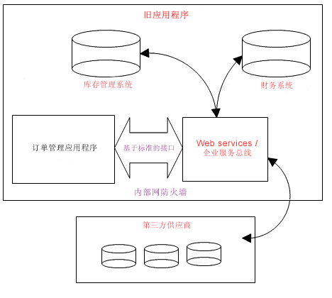

简介
复杂性是软件开发的中心问题。提升抽象级别有助于降低复杂性和项目所需的文档数量。可通过重用、使用高级别建模工具和稳定早期体系结构来达到此目的。
|
|
|
好处
|
|
|
模式
|
-
重用现有资产
-
使用高级工具和语言来降低产生的文档数量
-
首先注重体系结构
-
复原能力、质量、可理解性和复杂度控制的架构设计师。
|
|
反模式
|
-
要直接将含糊的高级别需求变为定制的代码：
-
由于只使用了少数抽象，许多讨论都是在代码层面与更概念化的层面上进行的，这样失去了许多重用的机会。
-
非正式捕获的需求和附加信息需要反复地重新查看决定和规范。
-
对体系结构的有限强调将导致在项目后期进行返工。
|
|
讨论
在软件开发中面临的一个主要问题是复杂性。我们知道降低复杂性对生产力有很大影响。在更高的抽象级别上工作将降低复杂性，并能促进沟通。
其中一个降低复杂性的有效方法是重用现有资产，诸如可重用组件、旧系统、现有业务流程、模式或开放式源代码软件。以下是在过去十年中，对软件行业有重大影响的重要重用示例：
-
重用中间件，例如数据库、Web 服务器和门户网站，以及最新的
-
开放式源代码软件，提供许多可利用的小型和大型组件。
更进一步来说，Web Service 会对重用带来很大影响，因为它提供了在不同平台并在消费者和服务供应商耦合松散的情况下，重用功能的主要组块的简单方法。这说明我们能更方便地利用服务的不同组合来处理业务需要。 还可通过开放标准（例如
RAS、UDDI、SOAP、WSDL、XML 和 UML）来促进重用。

通过面向服务的体系结构来重用现有资产。
重用的其中一个问题是在开发时，两个组件需要知道彼此的存在。
面向服务的体系结构可通过提供称为松散耦合的服务来减轻此问题的影响：服务的消费者可动态找到服务的供应商。因此，可将现有组件或旧系统包含在服务中，允许其他组件或应用程序通过基于标准的接口、不必依赖平台和实施技术即可动态地访问那些功能。
降低复杂性并促进沟通的另一个方法包括利用高级工具、框架和语言：
-
标准语言（例如统一建模语言（UML））和快速应用程序语言（例如 EGL）提供表达高级别构造（例如业务流程和服务组件）的功能，便于针对高级别构造进行协作，同时隐藏不必要的细节。
-
设计和构造工具，可自动从高级别构造移动到工作代码：
-
-
提供向导，通过生成代码并启用代码片段来自动设计、构造和测试任务。
-
通过集成开发、构建和测试环境，将集成和测试转换为无缝开发任务。
-
组合包管理工具，将多个项目的财务和其他方面管理作为一个实体，而不是一组单独的实体。
简而言之，高级别工具可以图形化方式捕获关键建模信息，这是概括和表达此信息的极有效且有吸引力的方法。可在支持材料：可视建模中找到有关可视建模好处的更多详细信息。
管理复杂性的第三个方法为注重体系结构，定义业务或者开发系统或应用程序。在软件开发中，旨在项目早期设计、实施和测试体系结构。这说明在项目早期，注重于以下目标：
-
定义高级别构建块和最重要的组件，及其职责和接口。
-
设计并实施体系结构机制，即常见问题的现成解决方案，例如如何处理持久性或垃圾回收问题。
通过尽早确定正确的体系结构，可提供系统的框架结构，使其在将更多人员、组件、功能和代码添加到项目时更易管理复杂性。还可确定可利用哪些可重用资产，以及需要定制构建哪些系统方面。
|